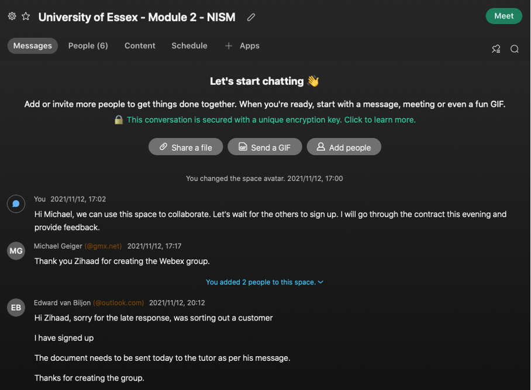
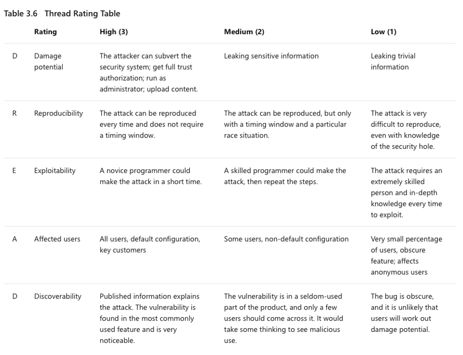
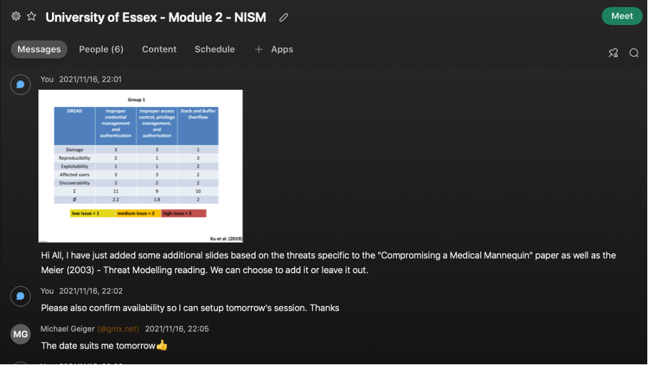
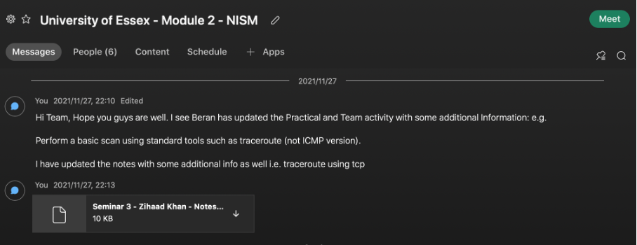

NISM - Unit Objectives & Reflections

This page contains the objectives, outcomes and reflections of each unit (week) of the module. Please click on the headings to expand the notes.
Unit 1 - Network and Information Security Management: History & Definitions
Unit 1 - Network and Information Security Management: History & Definitions
Objectives
- Define the four tenets of security and understand how they underpin the field of Information Security.
- Become familiar with the key international standards that define Information Security Management.
- Review the two core concepts of Information Security – vulnerabilities and threats – and understand how they are related and how they can be classified and assessed.
- Identify a range of professional roles that are available in the Information Security field.
Outcomes
- Explain the basic principles of Information Security Management.
- Describe the 4 tenets/ principles of Information Security Management.
- Describe what constitutes a threat and vulnerability.
- List several common roles within the Information Security profession.
Reflection on Unit 1
Unit 1 represented the first week of the Network and Information Security Management course. The basics of information and security management were discussed in this Unit. Having prior experience in networking, I was particularly excited as some of the topics covered would suffice as a good refresher. Students were expected to complete an initial post covering major threats and vulnerabilities as well as mitigation techniques from a paper written by Glisson et al. (2015).
Team groups were also established in preparation for the first seminar. I was placed in Group 1 along with 4 other team members. It was also required that we submit a signed team contract before the end of the Unit. Messaging between myself and other team members started on the VLE (Virtual Learning Environment) platform and thereafter moved to e-mails, however this was not effective. For us to collaborate as a team I had set up a Webex space and had invited all team members to download the application. The first meeting was held 2 days after the seminar, the agenda included completing the team contract along with an introduction of each team member. It was very interesting to learn the backgrounds of each team member and how they would add value to the tasks and group as a whole. We had agreed on the various roles within the group, I had taken the role of communication leader responsible for all communication as well as setting up meetings for the group. Coming from a unified communication background, I had experience using collaboration tools such as Webex and had agreed to take up the role. The team contract was finalized and submitted after the meeting.
Figure 1 below represents the Webex space created for our team:
As mentioned previously an initial post was also due at the end of the week which involved around 5 hours of research to obtain relevant papers. My knowledge of the medical environment as well as medical technologies was limited, and this task provided a good opportunity to fill that gap. I had learnt about the importance of securing medical devices and the implications of attacks on these devices (Williams & Woodward, 2015).
In addition, I had planned to draw up an action plan for my e-portfolio during this week however this was not possible due to time constraints. This was then placed on the backlog list for completion during Unit 2.
References
Glisson, W., Andel, T., Mcdonald, J., Jacobs, M., Campbell, M. & Mayr, J. (2015). Compromising a Medical Mannequin. Available from: https://www.researchgate.net/publication/281487935_Compromising_a_Medical_Mannequin [Accessed 13 November 2021].
Williams, P. A., & Woodward, A. J. (2015). Cybersecurity vulnerabilities in medical devices: a complex environment and multifaceted problem. Medical devices. Health Informatics Journal, 25(2): 305–316. Available from: https://journals.sagepub.com/doi/pdf/10.1177/1460458217706184 [Accessed 14 November 2021].
Unit 2 - Real World Issues & Implications of Information Security Threats & Vulnerabilities
Unit 2 - Real World Issues & Implications of Information Security Threats & Vulnerabilities
Objectives
- Review the vulnerabilities of modern electronic medical devices.
- Discuss the use of exploitation software to create threats.
- Classify and evaluate the combination of threats and associated vulnerabilities and the impact on real-world devices.
Outcomes
- Describe a number of typical vulnerabilities of modern electronic devices.
- Explain how common vulnerabilities can be exploited using software toolkits.
- Use industry standard toolkits to classify and evaluate threats and vulnerabilities.
Reflection on Unit 2
In addition to the essential reading items, Unit 2 of the module involved responding to colleague’s initial posts in the form peer responses. Various research papers and journals were studied in order obtain the relevant information to form constructive peer responses. Some of these include: Sametinger et al. (2015) - Security challenges for medical devices, Williams, P. A., & Woodward, A. J. (2015) - Cybersecurity vulnerabilities in medical devices: a complex environment and multifaceted problem, Wang et al., 2020 - Security of Medical Cyber-physical Systems. Full references for these texts are provided below.
The collaborative discussions have been helpful, learning and understanding from my colleagues’ viewpoints. Everyone brings a different perception and angle to the discussion. I have learnt the distinct difference between a threat and vulnerability; this wasn’t clear to me prior to completing the Unit tasks. My knowledge has also expanded regarding the security issues that medical devices face, I had very little knowledge on the technology advancements in this area. I have also learnt how to correctly (in my opinion) perform a DREAD analysis; this was also a new concept for me. From this collaboration task it was clear that I had to perform extensive reading on the topics to fill the knowledge gaps that I had.
A seminar was also held during this unit which focused on Microsoft STRIDE and DREAD tools. A presentation was required by each group for discussion during the seminar. I had studied the chapter called Threat Modeling by Meier et al. (2010) and using the table below performed a DREAD analysis.
This was placed in a presentation format for discussion during the team meeting. I had posted this to the other team members in preparation for the upcoming session.
During the team meeting it was agreed that we would use my slides to present to the forum in the seminar. As a team, we had analysed the DREAD value ratings and adjusted them accordingly. Based on the feedback from my peers during the session I had felt confident that my understanding of the task required, and dread value ratings were correct. Prior to the team session I could not validate and confirm this.
References
Meier, J., Mackman, A., Dunner, M., Vasireddy, S., Escamilla, R. & Murukan, A. (2003) ‘Improving Web Application Security: Threats and Countermeasures - Threat Modelling’. Microsoft Corporation. Available from: https://docs.microsoft.com/en-us/previous-versions/msp-n-p/ff648644(v=pandp.10) [Accessed 20 November 2021].
Sametinger, J., Rozenblit, J., Lysecky, R., & Ott, P. (2015). Security challenges for medical devices. Communications of the ACM, 58(4): 74–82. Available from: https://dl.acm.org/doi/fullHtml/10.1145/2667218 [Accessed 20 November 2021].
Williams, P. A., & Woodward, A. J. (2015). Cybersecurity vulnerabilities in medical devices: a complex environment and multifaceted problem. Medical devices. Health Informatics Journal, 25(2): 305–316. Available from: https://journals.sagepub.com/doi/pdf/10.1177/1460458217706184 [Accessed 20 November 2021].
Wang, Z., Ma, P., Zou, X., Zhang, J., & Yang, T. (2020) ‘Security of Medical Cyber-physical Systems: An Empirical Study on Imaging Devices’, IEEE INFOCOM 2020 - IEEE Conference on Computer Communications Workshops. Canada, 6-9 July 2020. USA: IEEE. Available from: https://ieeexplore.ieee.org/document/9162769 [Accessed 20 November 2021].
Unit 3 - Network Fundamentals
Unit 3 - Network Fundamentals
Objectives
- Present a brief history of networking.
- Discuss the ISO/OSI 7-layer model and how it relates to modern networks.
- Introduce TCP/IP and describe how it forms the basis of the Internet.
- Describe some basic internet tools including ping, traceroute and dig.
- Discuss what is meant by IPv4 and IPv6.
Outcomes
- Describe the fundamental concepts of networks.
- Evaluate a number of widely available tools to use for basic network troubleshooting.
- Explain the differences between the IPv4 and IPv6 standards.
Reflection on Unit 3
Week 3 focused on the fundamentals of networking and utilizing various scanning tools to perform a scanning exercise against the website assigned. A summary post was required based on the initial post written in week 1 as well as feedback from peers in the form of peer responses. It was very beneficial to read and understand the views of my peers, each person brings a different and unique viewpoint. This aided my understanding regarding threats, vulnerabilities, and mitigation actions in medical devices.
A practical scanning exercise was also required in this unit, this activity provided the opportunity to learn about various scanning tools in the industry. Regarding the team activity, each member produced results in a team discussion. These results were then discussed in a team meeting and aligned. I was very happy with the results I had obtained as it aligned with the rest of the team. The screenshot below provides evidence of my results sent to the team.
Perhaps for future scanning activities, one could use alternative tools to validate these results.
Unit 4 - Basic Network Investigation Using Standard Tools
Unit 4 - Basic Network Investigation Using Standard Tools
Objectives
- Practice using built in utilities for network troubleshooting.
- Discuss the outputs produced by those tools.
- Read and discuss the paper in the reading list.
Outcomes
- Perform basic troubleshooting and investigations using the tools provided as part of common operating systems (tools such as ping, traceroute and so on).
- Analyse the outputs provided by the tools.
- Discuss the difference between TCP/IP and the ISO/OSI protocol stacks.
Reflection on Unit 4
Unit 4 dived a bit deeper into network scanning tools. We were asked to analyze the outputs provided by the tools in Unit 3, the analyses were to be posted under the collaborative learning discussion forum as an ‘Initial Post’. Having prior experience working with networking tools I felt this task to be quite familiar and easily achievable. On the contrary after read McNab (2017) I was amazed at what details I was missing when these tools were used. For example, nmap (Network Mapper) was used to determine open ports, however knowing the port 80 is open; one can execute the telnet command and issue a HEAD / HTTP/1.0 request – this reveals that the server is running Apache.
In addition, a seminar was held during this unit which focused on the differences between TCP/IP vs. ISO/OSI. Again, having been in the networking industry this provided me with the opportunity to delve a bit deeper into the history of both models and how they came about. I was particularly amazed how politics affected the development of these models (Russell, 2006).
References
McNab, C. (2017) Network Security Assessment: Know Your Network. 3rd ed. O'Reilly Media
Russell, A.L. (2006) ‘Rough Consensus and Running Code’ and the Internet-OSI Standards War. IEEE Annals of the History of Computing. Available from: https://www2.cs.duke.edu/courses/common/compsci092/papers/govern/consensus.pdf [Accessed 04 December 2021].
Unit 5 - Network Tools and Components
Unit 5 - Network Tools and Components
Objectives
- Review the functions of the wide variety of network components such as switches, routers, firewalls and gateways.
- Describe the role of networking equipment in virtualised environments such as the cloud.
- Discuss advanced network diagnostic tools such as scanners and packet sniffers.
Outcomes
- Describe the different network tools and components available.
- Explain when and where to use selected tools and components.
- Evaluate the security implications of using selected components.
Reflection on Unit 5
The focus of week 5 was based on network protection and various intrusion detection tools. It was also required during this unit that students participate in the collaboration discussion and respond to other colleagues ‘initial post’ in the form of peer responses. The highlight of this unit for myself was reading the following paper by Niemietz and Schwenk, 2015) titled: Owning Your Home Network: Router Security Revisited. I was amazed at how manufacturers of routers can ship routers out to homes with default passwords being used for the administration interface. Furthermore, these routers were found to be vulnerable to Cross Site Scripting (XSS) and Cross Site Forgery (CSFR) attacks. This research tempted me to look at my own home router configuration and implement some of the recommendations put forward. For example, default router passwords were changed, firmware versions upgraded, and wireless security enhanced by utilizing WPA2 instead of WPA (Wifi Protected Access). I found this exercise to be a very good example of putting theory studied into practice.
References
Niemietz, M. and Schwenk, J. (2015) Owning Your Home Network: Router Security Revisited. Available from: https://www.researchgate.net/publication/278332193_Owning_Your_Home_Network_Router_Security_Revisited [Accessed 06 December 2021].
Unit 6 - An Evaluation of Commonly Utilised Network Scanning and Vulnerability Testing Tools
Unit 6 - An Evaluation of Commonly Utilised Network Scanning and Vulnerability Testing Tools
Objectives
- Evaluate network scanning and intrusion tools.
- Submit part 1 of your course assessment – the proposal.
Outcomes
- Select a toolset to use for scanning and vulnerability testing.
- Justify your selection.
- Submit the first part of your course assessment.
Reflection on Unit 6
Add Reflection Here
Unit 7 - Risks and Standards
Unit 7 - Risks and Standards
Objectives
- Review what is meant by risk within the context of Information Security Management.
- Discuss how to gather, analyse and mitigate risks from a security audit/ review/ planning session.
- Review business continuity and disaster recovery standards.
- Explore industry specific security standards and directives.
Outcomes
- Describe the purpose of risk assessment.
- Explain how to mitigate risks.
- Describe the difference between business continuity and disaster recovery.
- List common security standards and select the appropriate one(s) for a given situation.
Reflection on Unit 7
Add Reflection Here
Unit 8 - How to Evaluate and Apply Applicable Security Standards
Unit 8 - How to Evaluate and Apply Applicable Security Standards
Objectives
- Review and discuss a number of GDPR related case studies.
- Review standards web sites.
- Discuss case studies and standards on the forum.
Outcomes
- Explain which GDPR regulations are applicable to their assigned website.
- Describe which other standards their assigned website needs to meet.
- Advise on mitigations to help a website meet any of the standards applicable to its specific industry, such as data and privacy (GDPR) or financial (PCI-DSS).
Reflection on Unit 8
Add Reflection Here.
Unit 9 - System Logging and Forensics
Unit 9 - System Logging and Forensics
Objectives
- Review the types of logs and tools used to view logs.
- Explore different types of logging and analysis tools.
- Describe the steps involved in a security breach response.
- List a number of tools used for forensic investigations.
Outcomes
- Explain how and why logging is used in security systems.
- Describe which tools to use for logging and analysis.
- Explain how logging is used in incident investigations.
- Describe the best forensic techniques to use.
Reflection on Unit 9
Add Reflection Here.
Unit 10 - Analysing and Mitigating Security Breaches
Unit 10 - Analysing and Mitigating Security Breaches
Objectives
- Discuss a number of case studies related to the most famous breaches of the 21st century.
- Apply the breach checklist provided in the lecturecast.
- Analyse an assigned case study and post results.
Outcomes
- Utilise the breach checklist to analyse a breach.
- Recommend a number of actions and tools based on the analysis.
- Critically assess published responses.
Reflection on Unit 10
Add Reflection Here
Unit 11 - Future Trends, Technologies and Challenges for the Information Security Industry
Unit 11 - Future Trends, Technologies and Challenges for the Information Security Industry
Objectives
- Review existing and emerging trends and technologies such as SDN and FIAs.
- Discuss some of the security challenges they are designed to overcome.
- Describe the associated issues with new technologies.
Outcomes
- Describe emerging trends and technologies.
- Explain the impact of emerging changes.
- Describe some challenges encountered with both current and new solutions.
Reflection on Unit 11
Add Reflection Here
Unit 12 - Debate on the Future of the Internet
Unit 12 - Debate on the Future of the Internet
Objectives
- Review the options for the future Internet architecture.
- Debate the future of the Internet.
- Vote on the most popular option (as presented in the debate) that should be adopted.
Outcomes
- Describe several potential future Internet architectures.
- Argue for and against several architectures.
- Reflect on the role of Information Security Management in modern computing solutions.
Reflection on Unit 12
Add Reflection Here
Final Reflection of the Module (<1000 words)
Add Reflection Here
Final Reflection of the Module (<1000 words)
Add Reflection Here